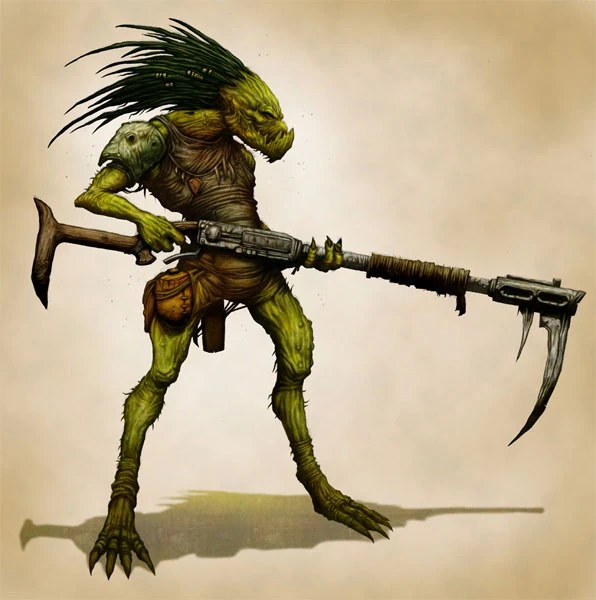

Kroot
| Kroot | |
|---|---|
 A Kroot carnivore with a Kroot rifle, from an Ordo Xenos bestiary Artwork © Games Workshop | |
| Classification | Xenos; carnivorous avian humanoids |
| Homeworld | Pech, Eastern Fringe |
| Leaders | Shapers; the legendary Anghkor Prok |
| Society | Kindreds (clans) |
| Allegiance | Auxiliaries of the T'au Empire since 844.M38; mercenaries across the galaxy |
| Forms | Carnivores; Krootox; Kroot hounds; Knarlocs; Great Knarlocs |
| Starships | Warspheres |
The Kroot are a xenos race of carnivorous warriors from the world Pech on the Eastern Fringe. They are able to take on traits of the creatures they eat, absorbing useful genetic material from their prey and passing it on to their descendants, and they have spread into many different forms by doing so. They are the oldest and most numerous auxiliaries of the T'au Empire, whom they joined after the T'au helped drive the Orks from their worlds, but Kroot kindreds also sell their service as mercenaries across the galaxy, including to Imperial commanders.[1][2]
Kroot society is organised into kindreds led by Shapers, who choose what their warriors eat and so steer their kindred's evolution. Kroot fight with long rifles fitted with blades, travel in great spherical warships called warspheres, and are famed for eating the dead after battle.[2]
Biology
[edit]The Kroot evolved from avian predators on Pech. They are lean, wiry and quick, with beaks, quills on their heads and an excellent sense of smell. Their defining trait is the ability to absorb genetic material from the flesh they eat. A kindred that eats a strong predator may grow stronger over generations; one that eats flying creatures may grow wings. The process is uncontrolled and can go wrong: the forests of Pech hold beasts that were once Kroot and have degenerated into monsters. The Krootox, Kroot hounds and Knarlocs fought alongside the Kroot are other branches of the same line, or beasts of Pech the Kroot have bred.[2]
The Shapers forbid certain flesh. The meat of the T'au is banned, out of respect for the race that saved Pech. Tyranid flesh is declared inedible, since the Shapers fear the effect of a species that itself absorbs the genes of its prey. Necron living metal cannot be eaten; in 976.M41 on the Kroot world Caroch a plague of nanoscarabs tore apart Kroot who had tried.[2]
History
[edit]Pech
[edit]Before they met the T'au, the Kroot had spread to a handful of worlds in warspheres, possibly built with technology they took from another race. Their worlds came under attack by the Orks, who besieged Pech itself. Near the end of the T'au First Sphere Expansion, an exploration fleet from Dal'yth saw Ork ships firing on Kroot warspheres. The T'au intervened, and over ten years drove the Orks from the Kroot worlds, finally reaching Pech at the request of the greatest of the Kroot leaders, Anghkor Prok. The Kroot joined the T'au Empire as allies, an alliance the Imperium dates to 844.M38.[1][a]
Mercenaries
[edit]The T'au allow the Kroot to hire themselves out, and kindreds have fought for many masters, including rebels, Rogue Traders and Imperial commanders on the fringes, who sometimes employ them in breach of Imperial law. Kroot warspheres have appeared as far away as the Jericho Reach. Kroot fought for the T'au against the Imperium in the Damocles Gulf Crusade (742–745.M41), where they were feared for their ambushes in close terrain.[1][3]
Era Indomitus
[edit]In the Era Indomitus Kroot kindreds fight beside the T'au in the wars of the Fourth and Fifth Sphere Expansions and against the forces of Chaos and the Tyranids. Ordo Xenos reports from the early 42nd millennium speak of large hunting packs led by veteran Shapers and of lone hunters who track a single prey for years, and they warn that Kroot numbers on the Eastern Fringe are growing.[4]

Culture and warfare
[edit]A Kroot kindred is a clan and a war band at once. Its Shaper is its leader, priest and keeper of its bloodline. Kroot fight in loose packs, using cover and ambush, and are at their best in forests and broken ground. Their rifles fire solid slugs and have blades on either end for close combat. After a battle they eat the enemy dead, a practice that horrifies Imperial troops but is for the Kroot a matter of survival and honour.[2]
Timeline
[edit]| Date | Event |
|---|---|
| 844.M38 | The T'au free Pech from the Orks; the Kroot join the T'au Empire |
| 742–745.M41 | Kroot fight the Imperium in the Damocles Gulf Crusade |
| 976.M41 | Nanoscarab plague on Caroch |
| Early M42 | Kroot hunting packs in the Era Indomitus wars |
See also
[edit]
Notes
[edit]- ^ The Imperial date of 844.M38 marks the alliance. The T'au campaign that freed the Kroot worlds began about ten years earlier.
References
[edit]- ^ a b c Ciaphas Cain: Hero of the Imperium (Omnibus Novel), "For the Emperor" (novel) by Sandy Mitchell, Chs. 3, 12. Codex: Tau Empire (7th Edition), "Alien Auxiliaries", pg. 35. Games Workshop.
- ^ a b c d e Codex: Tau Empire (6th Edition), pp. 12, 49. Games Workshop. Codex: Necrons (7th Edition) (Digital Edition), "A New Epoch Begins". Games Workshop.
- ^ Codex: Tau (3rd Edition), pg. 29. Games Workshop. Cawkwell, Sarah. Primary Instinct (Short Story). Black Library.
- ^ Imperial Armour Volume Three - The Taros Campaign, pp. 73, 221-222. Xenology (Background Book), pp. 49-50.